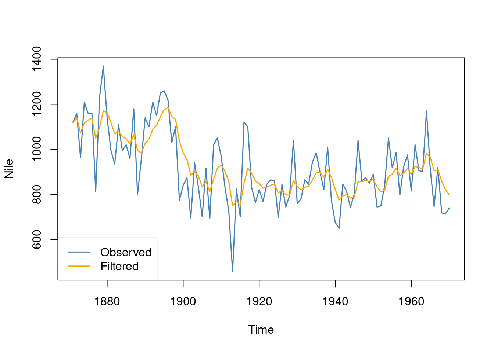

#install.packages("dlm") # uncomment the first time to install.
library(dlm)State-Space models and the Kalman Filter
This tutorial gives a very brief introduction to state-space models in the
dlmpackage, exemplified with the local level model fitted to the well-known Nile river data.
Local level model
Consider first the local level model given by
\[y_t = \mu_t + \varepsilon_t,\qquad \varepsilon_t \sim N(0,\sigma_\varepsilon^2)\]
\[\mu_t = \mu_{t-1} + \nu_t,\qquad \nu_t \sim N(0,\sigma_\nu^2)\]
which models the observed time series \(y_t\) as a mean \(\mu_t\) plus a random measurement error or disturbance \(\varepsilon_t\). The mean \(\mu_t\) evolves over time as a random walk driven by innovations \(\nu_t\).
State-space model
A state-space model for a univariate time series \(y_t\) with a state vector \(\boldsymbol{\theta}_t\) is in the dlm package written as
\[ \begin{align} y_t &= \boldsymbol{F} \boldsymbol{\theta}_t + v_t,\hspace{1.5cm} v_t \sim N(\boldsymbol{0},\boldsymbol{V}) \\ \boldsymbol{\theta}_t &= \boldsymbol{G} \boldsymbol{\theta}_{t-1} + \boldsymbol{w}_t, \qquad \boldsymbol{w}_t \sim N(\boldsymbol{0},\boldsymbol{W}) \end{align} \]
For example, the local level model is a state-space model with
\[ \begin{align} \boldsymbol{\theta}_t &= \mu_t \\ \boldsymbol{C} &= 1 \\ \boldsymbol{A} &= 1 \\ \boldsymbol{V} &= \sigma_\varepsilon^2 \\ \boldsymbol{W} &= \sigma_\nu^2 \end{align} \]
Hence the state vector is a single scalar, \(\mu_t\), the unobserved local level of time series. We learn about the state \(\mu_t\) from the observed time series \(y_t\) .
Filtering and smoothing
There are two different types of relevant inferences in state-space models: filtering and smoothing:
The filtered estimate \(\hat{\boldsymbol{\theta}}_{t|t}\) of the state \(\boldsymbol{\theta}_t\) uses data up to time \(t\).
The smoothed estimate \(\hat{\boldsymbol{\theta}}_{t|T}\) of the state \(\boldsymbol{\theta}_t\) uses data up to time \(T\), the end of the time series.
The filtered estimate is therefore the instantaneous estimate, giving the best estimate of the current state. The smoothed estimate is the retrospective estimate that looks back in time and gives us the best estimate using all the data.
Filtering
Let’s do some filtering in the dlm package.
Load the dlm package:
Set up the local level model as a state-space model in the dlm package with \(\sigma_\varepsilon^2 = 10000\) and \(\sigma_\nu^2 = 10000\) (see below on how to estimate these parameters).
model = dlm(FF = 1, V = 10000, GG = 1, W = 10000, m0 = 0, C0 = 100^2)Compute the filtering estimate using the Kalman filter and plot the result
nileFilter <- dlmFilter(Nile, model)
plot(Nile, type = 'l', col = "steelblue")
lines(dropFirst(nileFilter$m), type = 'l', col = "orange")
legend("bottomleft", legend = c("Observed", "Filtered"), lty = 1,
col = c("steelblue", "orange"))
Parameter estimation by maximum likelihood
The parameters \(\sigma_\varepsilon^2\) and \(\sigma_\nu^2\) were just set to some values above. Let’s instead estimate them by maximum likelihood. The function dlmMLE does this for us, but we need to set up a model build object so the the dlm package knows which parameter to estimate. We reparameterize the two variances using the exponential function to ensure that the estimated variances are positive.
modelBuild <- function(param) {
dlm(FF = 1, V = exp(param[1]), GG = 1, W = exp(param[2]), m0 = 0, C0 = 100^2)
}
fit <- dlmMLE(Nile, parm = c(0,0), build = modelBuild)We need to take the exponential of the estimates to get the estimated variance parameters.
exp(fit$par)[1] 9120.485 15956.088So we see that the values used initially are not too far of the maximum likelihood estimates:
\(\hat \sigma_\varepsilon^2 \approx 9120\) and \(\hat\sigma_\nu^2 \approx 15956\). We can redo the filter, this time using the maximum likelihood estimates of the parameters:
model_mle = dlm(FF = 1, V = exp(fit$par[1]), GG = 1, W = exp(fit$par[2]), m0 = 0, C0 = 100^2)
nileFilter <- dlmFilter(Nile, model_mle)
plot(Nile, type = 'l', col = "steelblue")
lines(dropFirst(nileFilter$m), type = 'l', col = "orange")
legend("bottomleft", legend = c("Observed", "Filtered"), lty = 1,
col = c("steelblue", "orange"))Smoothing
nileSmooth <- dlmSmooth(Nile, model_mle)
plot(Nile, type = 'l', col = "steelblue")
lines(dropFirst(nileSmooth$s), type = 'l', col = "red")
legend("bottomleft", legend = c("Observed", "Smoothed"), lty = 1,
col = c("steelblue", "red"))
Forecasting
nileFore <- dlmForecast(nileFilter, nAhead = 5)
sqrtR <- sapply(nileFore$R, function(x) sqrt(x))
pl <- nileFore$a[,1] + qnorm(0.05, sd = sqrtR)
pu <- nileFore$a[,1] + qnorm(0.95, sd = sqrtR)
x <- ts.union(window(Nile, start = c(1900, 1)),
window(nileSmooth$s, start = c(1900, 1)),
nileFore$a, pl, pu)
plot(x, plot.type = "single", type = 'o', pch = c(NA, NA, NA, NA, NA),
col = c("steelblue", "red", "brown", "gray", "gray"),
ylab = "River flow")
legend("bottomleft", legend = c("Observed", "Smoothed", "Forecast",
"90% probability limit"), bty = 'n', pch = c(NA, NA, NA, NA, NA), lty = 1,
col = c("steelblue", "red", "brown", "gray", "gray"))